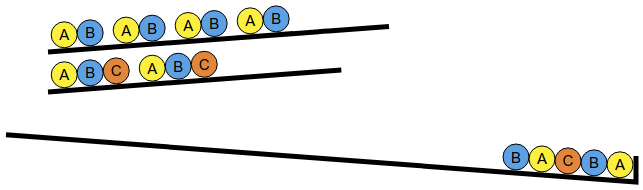
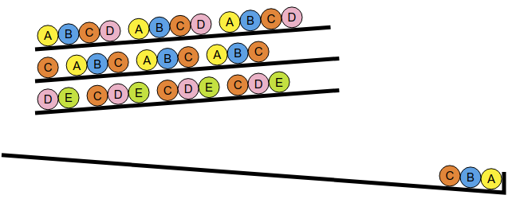

Kuularivi
Klikkaile numeroituja nappeja pudottaaksesi kuulia yksitellen, kunnes lopputuloksena on tavoitteen kanssa samanlainen kuularivi.
Klikkaile numeroituja nappeja pudottaaksesi kuulia yksitellen, kunnes lopputuloksena on tavoitteen kanssa samanlainen kuularivi.
Meidän pitää pudottaa kuulat tavoitteen kuulia oikealta vasemmalle vastaavassa järjestyksessä.
Tavoite koostuu kolmesta keskenään samanlaisesta 5 kuulan ryhmästä. Kussakin ryhmässä on (oikealta vasemmalle) kuulat A, B, C, A ja B.
Ensin pitää pudottaa kuulat A, B ja C. Jos pudotamme kuulat A ja B riviltä 1, emme sen jälkeen voi pudottaa kuulaa C.

Sen sijaan voimme aloittaa pudottamalla kuulat A, B ja C riviltä 2.

Tämän jälkeen saamme ensimmäisen 5 kuulan ryhmän valmiiksi pudottamalla kuulat A ja B riviltä 1.
Ensimmäistä ryhmää vastaavat klikkaukset olivat 2, 2, 2, 1, 1. Kaksi jäljellä olevaa 5 kuulan ryhmää saadaan muodostettua samalla tavalla: ensin pudotetaan 3 kuulaa riviltä 2 ja sitten 2 kuulaa riviltä 1. Tällaista kokonaista ratkaisua vastaavat klikkaukset ovat 2, 2, 2, 1, 1, 2, 2, 2, 1, 1, 2, 2, 2, 1, 1.
On myös toinen ratkaisuvaihtoehto: 2, 2, 2, 2, 2, 1, 1, 2, 2, 2, 1, 1, 2, 1, 1.
Tavoite koostuu kolmesta keskenään samanlaisesta 6 kuulan ryhmästä. Kussakin ryhmässä on (oikealta vasemmalle) kuulat A, B, C, D, C ja E. Yksi 6 kuulan ryhmä saadaan muodostettua pudottamalla 3 kuulaa riviltä 2 ja 3 kuulaa riviltä 3. Kuulia ei kuitenkaan voi pudottaa suoraan tässä järjestyksessä. Jos pudottaisimme suoraan 3 kuulaa riviltä 2, emme sen jälkeen voisi pudottaa kuulaa D. Pudotamme sen sijaan ensin 2 kuulaa riviltä 2 ja 1 kuulan riviltä 3:
Tämän jälkeen ensimmäinen 6 kuulan ryhmä saadaan valmiiksi pudottamalla 1 kuula riviltä 3, 1 kuula riviltä 2 ja taas 1 kuula riviltä 3.

Ensimmäistä ryhmää vastaavat klikkaukset olivat 2, 2, 3, 3, 2, 3. Kaksi jäljellä olevaa 6 kuulan ryhmää saadaan muodostettua samalla tavalla, ja kokonaista ratkaisua vastaavat klikkaukset ovat 2, 2, 3, 3, 2, 3, 2, 2, 3, 3, 2, 3, 2, 2, 3, 3, 2, 3.
On myös toinen ratkaisuvaihtoehto: 1, 1, 3, 3, 1, 3, 2, 2, 3, 3, 2, 3, 2, 2, 3, 3, 2, 3.
Tavoite koostuu kahdesta keskenään samanlaisesta 12 kuulan ryhmästä. Kussakin ryhmässä on (oikealta vasemmalle) 7 A-kuulaa, 2 B-kuulaa ja 3 C-kuulaa. Millään rivillä ei ole peräkkäisiä B- tai C-kuulia, joten ensimmäisen ryhmän 3 peräkkäistä C-kuulaa pitää pudottaa 3 eri riviltä. Lisäksi näiden C-kuulien edestä on täytynyt pudottaa täsmälleen 2 B-kuulaa. Välitön havainto on, että yksi C-kuula pitää pudottaa riviltä 5, koska muuten 3 C-kuulan edestä pitäisi pudottaa 3 B-kuulaa.
Rivillä 5 on 3 A-kuulaa ennen C-kuulaa. Kaksi muuta C-kuulaa tulee pudottaa sellaisilta kahdelta riviltä, joissa B-kuuliin päästään pudottamalla yhteensä 7-3 = 4 A-kuulaa. Tämä onnistuu ainoastaan valitsemalla rivit 1 ja 3. Aloitamme siis pudottamalla yhteensä 7 A-kuulaa riveiltä 1, 3 ja 5:

Tämän jälkeen pudotetaan 2 B-kuulaa riveiltä 1 ja 3:

Ensimmäinen 12 kuulan ryhmä saadaan valmiiksi pudottamalla lopuksi 3 C-kuulaa riveiltä 1, 3 ja 5:

Ensimmäistä ryhmää vastaavat klikkaukset olivat 1, 1, 3, 3, 5, 5, 5, 1, 3, 1, 3, 5. Toinen ryhmä saadaan muodostettua samalla tavalla, ja kokonaista ratkaisua vastaavat klikkaukset ovat 1, 1, 3, 3, 5, 5, 5, 1, 3, 1, 3, 5, 1, 1, 3, 3, 5, 5, 5, 1, 3, 1, 3, 5. Olennaisesti samaan ratkaisuun päästäisiin myös hieman erilaisilla klikkausjärjestyksillä.
Tehtävä muistuttaa listojen lomitusta, joka on kohtalaisen yleinen toimenpide monissa tietojenkäsittelyn sovelluksissa. Kun on annettu kaksi tai useampaa jonkinlaisista tietoalkioista (tässä kuulista) koostuvaa listaa (tässä kuulariviä), lomituksen tavoite on yhdistää nämä erilliset listat yhdeksi halutut kriteerit (tässä vastaavuus tavoitteen kanssa) täyttäväksi listaksi.
Lomitusta käytetään yleensä varsinkin järjestettyjen alkiolistojen yhteydessä, jolloin kukin aluksi annettu lista on järjestyksessä, ja ne halutaan yhdistää yhdeksi samojen kriteerien mukaan järjestetyksi listaksi. Kukin aluksi annettu lista voisi esimerkiksi sisältää tietyn luokan oppilaat pituusjärjestykseen järjestettyinä, ja näistä voitaisin haluta luoda yksi lista, joka esittää kaikki koko koulun oppilaaat pituusjärjestyksessä. Tavoite saataisiin aikaiseksi lomittamalla kaikki yksittäisten luokkien listat yhdeksi isoksi listaksi. Tämäntapainen keskenään samanlaista järjestystä noudattavien listojen lomittaminen onnistuu tehokkaasti, ja esimerkiksi jonkin alunperin järjestämättömän aliojoukon alkiot järjestykseen asettava (lajitteleva) ns. lomituslajittelu pohjautuu järjestettyjen listojen lomitukseen.
Katso lisää esim. https://fi.wikipedia.org/wiki/Lomituslajittelu.